Together with my team, I co-curated this exhibition, combining art and education to help address gaps in public understanding of menopause and encourage greater respect and support for women experiencing it.
Here, I share the works I created or co-created for the exhibition.
Lead Artist & Co-curator
Xiaofang’s Diary
M21 Art Center, 2024
Together with my team, I co-curated this exhibition, combining art and education to help address gaps in public understanding of menopause and encourage greater respect and support for women experiencing it.
Here, I share the works I created or co-created for the exhibition.
Lead Artist & Co-curator
Xiaofang’s Diary
M21 Art Center, 2024
Together with my team, I co-curated this exhibition, combining art and education to help address gaps in public understanding of menopause and encourage greater respect and support for women experiencing it.
Here, I share the works I created or co-created for the exhibition.
Tap the seal to open
Lead Artist & Co-curator M21 Art Center, 2024
Xiaofang’s Diary
This exhibition documents Xiaofang’s relationship with menopause at different stages of her life. She sees menopause flowing through women’s lives—from her mother to herself, and on to others.
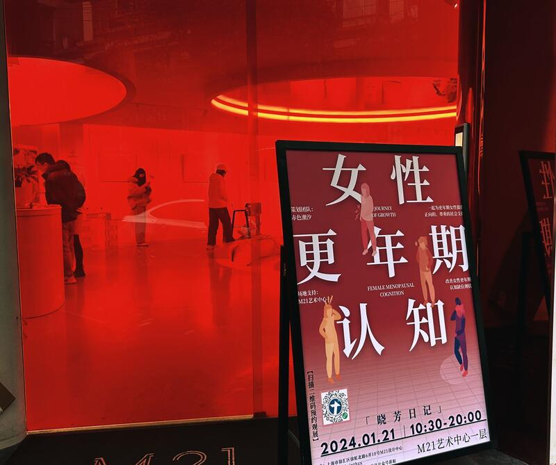
儿童时期
Childhood
I don’t know what “menopause” is, or what it means.I first heard the word “menopause” in a TV drama.I hate it!I’m scared it will turn my mom into a “tigress”!
Xiaofang
“Everyone on TV seemed to have started avoiding that lady, as if she’d become a bad person.”
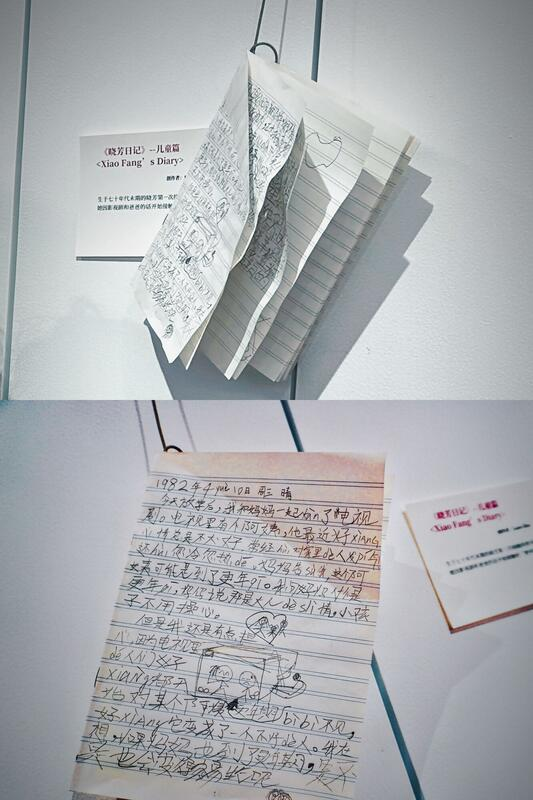
Xiaofang’s Diary: Childhood
Lane Zhu, Jacob Shi
Born in the late 1970s, Xiaofang first heard about menopause through TV dramas and her father’s criticism of her mother. Using childlike handwriting and the voice of a young Xiaofang, the work captures a child’s thoughts on first encountering the word “menopause.” The child comes to understand it as a synonym for a bad temper and an insult used against others. This invites reflection on the gaps and misconceptions in children’s understanding of menopause.
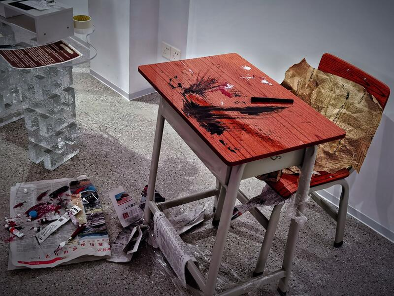
The Desk
Lane Zhu
Carved into the wooden desk are whispered conversations between Xiaofang’s classmates during her primary school years.
“Ms. Chen was so mean today!” “Yeah, she’s probably going through menopause.” “But she only got angry because Xiaoming didn’t do his homework.”
Women’s normal emotions are attributed to menopause, while the real reasons for their distress are completely ignored.
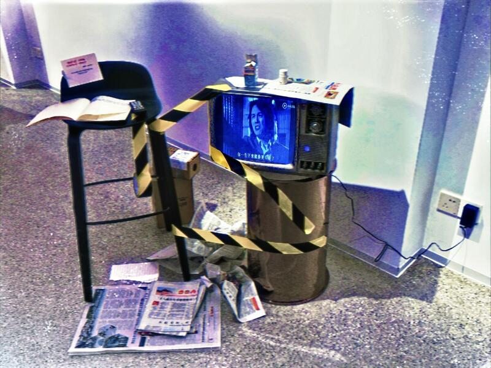
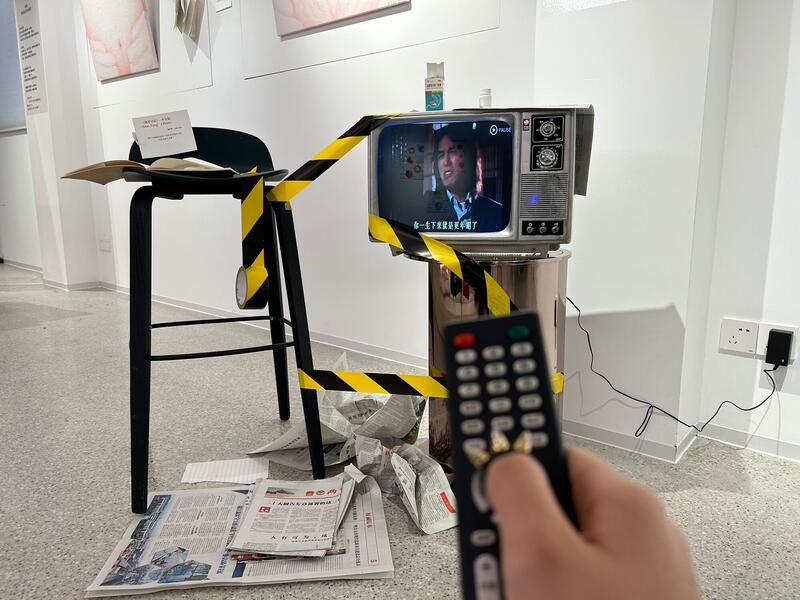
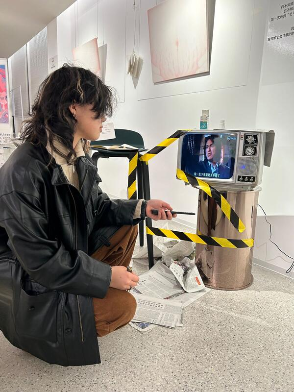
TV
Lane Zhu
A repurposed old television and old newspapers recreate the atmosphere of the early 1980s. A Hong Kong film playing on the television includes the line: “You’ve been menopausal since the day you were born.” Of course, no one is born menopausal. Here, menopause is used as an insult, once again becoming a synonym for hysteria and irrational behaviour. The work reveals how menopause is stigmatized in film and television. The word “menopause” takes on a distorted meaning and, through entertainment, seeps into people’s everyday lives…
青春期
Adolescence
As I entered adolescence, I became a little rebellious.During an argument with my mother, I shouted before I could stop myself: “Are you going through menopause or something?You’re so bad-tempered!”As soon as I said it, my mother’s eyes widened, and I froze where I stood.
Xiaofang
“It seemed as though too much of Mom’s unhappiness had come pouring out all at once, and she couldn’t stop crying. I sat at the dining table, at a loss, feeling there was nothing I could do to help. Why was Mom sad for no reason?”
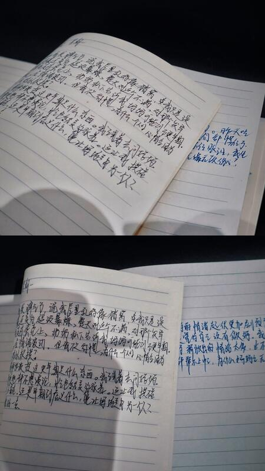
Xiaofang’s Diary: Adolescence
Lane Zhu
Xiaofang has entered adolescence, and her handwriting has become more graceful. She still keeps a diary. She sees menopause in her mother, witnessing her anxiety, mood swings and physical changes. She feels she has seen the effects of menopause firsthand, yet her lack of understanding leaves her unsure of how to help.
中年时期
Middle Age
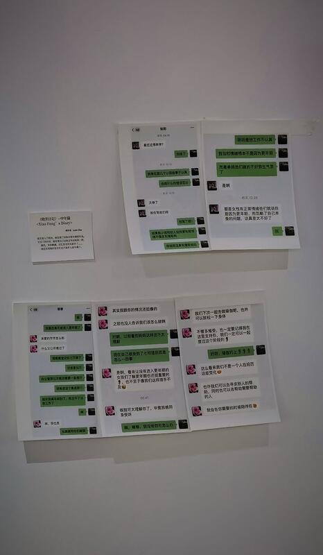
Xiaofang’s Diary: Middle Age
Lane Zhu
When a middle-aged female leader loses her temper over a specific issue with a group of lazy subordinates, she may be dismissed as “menopausal,” even when her reprimand is entirely justified. Menopause becomes a convenient excuse for subordinates to ignore, defy or ridicule female leaders. Many middle-aged women find their development hindered by the stigma attached to menopause.
Xiaofang feels the changes menopause brings to her body. She often feels hot, her memory is not as good as it used to be, and her whole body aches. Talking with her friend Cuicui, she discovers that they all experience these problems—they simply go unseen. They also realise that they were almost entirely unprepared for them.
My body has begun to change.Insomnia, heart palpitations, hot flashes, mood swings and sweating keep appearing, one after another.I don’t know what to do.I am beginning to feel afraid.
Xiaofang
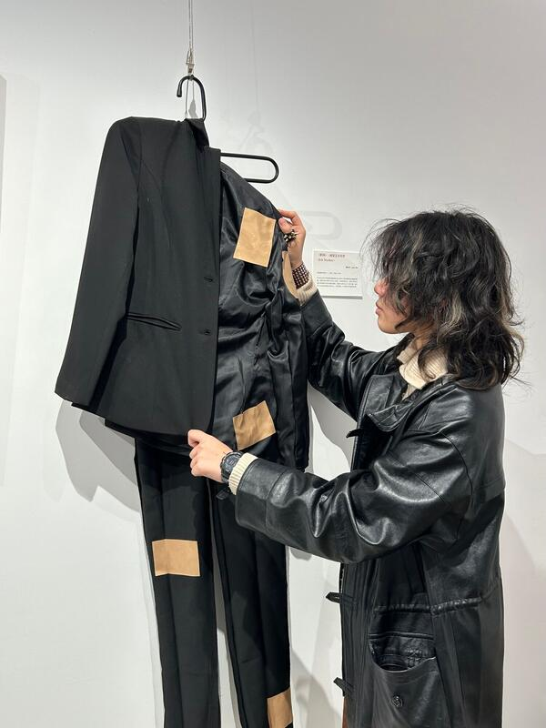
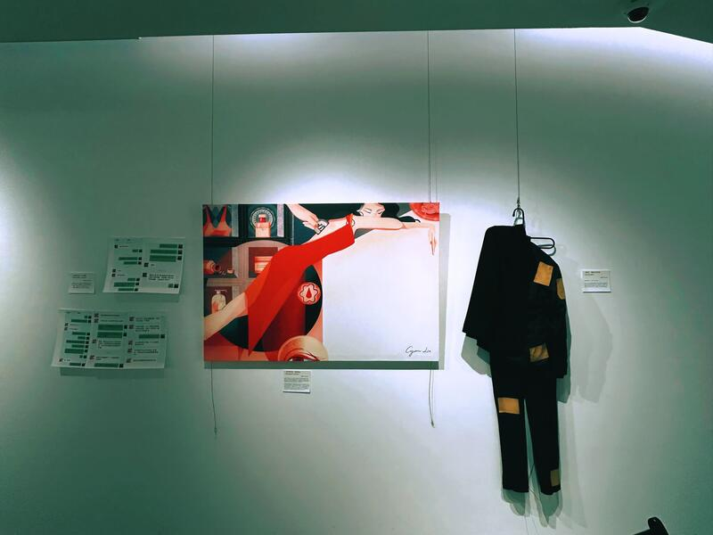
Job Market
Lane Zhu
A black suit jacket, a white shirt and suit trousers. The most ordinary work attire. The clothes are hung inside out, with pain-relief patches attached to the inside. When the clothes are worn normally, the patches are invisible. The aches and physical discomfort women experience while working through menopause are also hidden beneath their work clothes.
老年时期
Later Life
This year, I am 61, and I have been through it myself.What I want to say is that menopause is not as frightening as we imagine.All fear comes from the unknown.Just try to understand it and learn a few simple ways to ease the symptoms.You will get through this stage!It is a normal physiological process, nothing more.Your body will not harm you.So, all you need to do is love yourself and love the women around you who are going through menopause.Do not let your lack of understanding hurt yourself or others.
Xiaofang
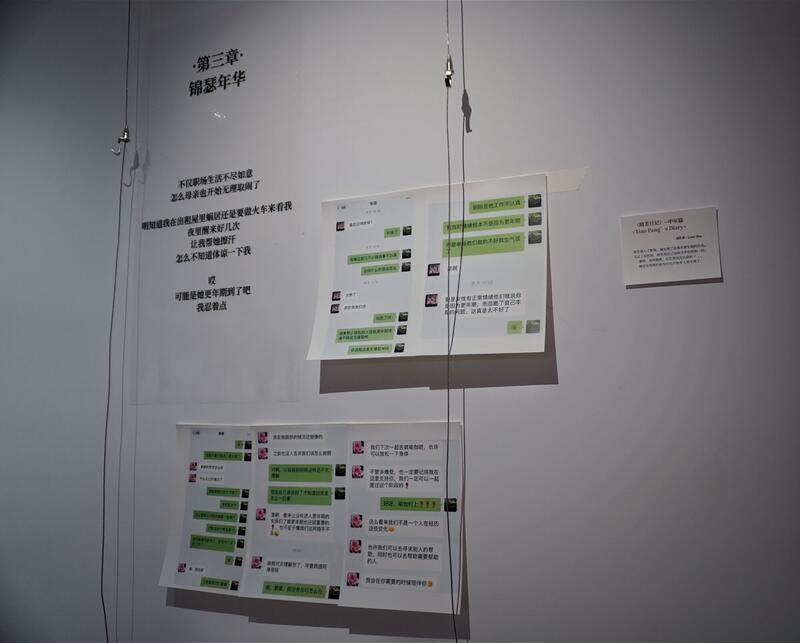
Xiaofang’s Diary: Later Life
Lane Zhu
Xiaofang has crossed the river of menopause. She finally understands that menopause is part of life’s natural rhythm.
更年期指南
A Guide to Menopause
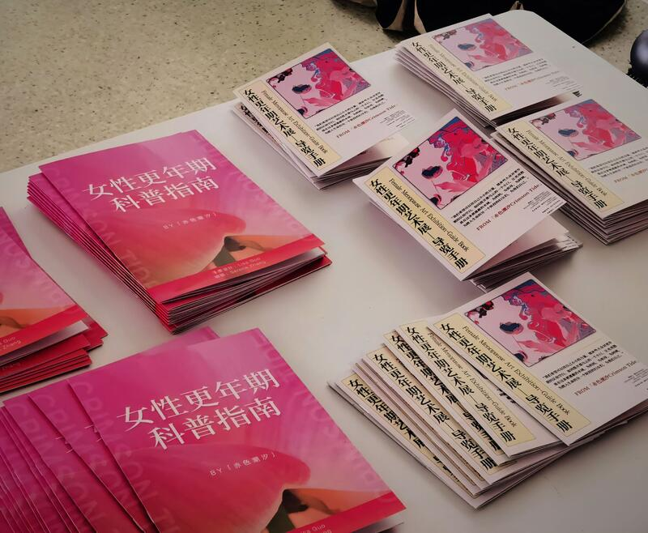
All team members
As part of the exhibition’s public education programme, our team compiled A Guide to Menopause, drawing on published literature and expert advice. The booklet covers the definition of menopause, its symptoms and characteristics, current public understanding, the consequences of gaps in awareness, and evidence-based ways to relieve symptoms. It helps the public develop a more accurate understanding of menopause.